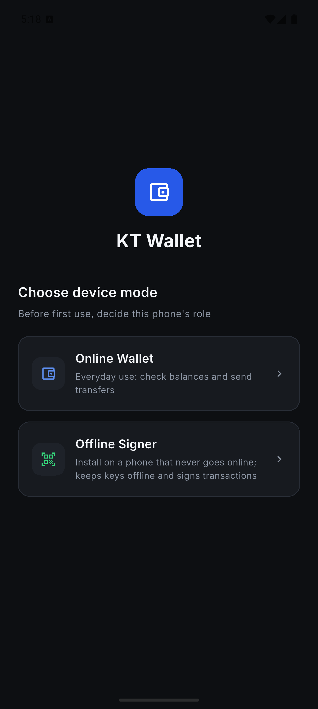
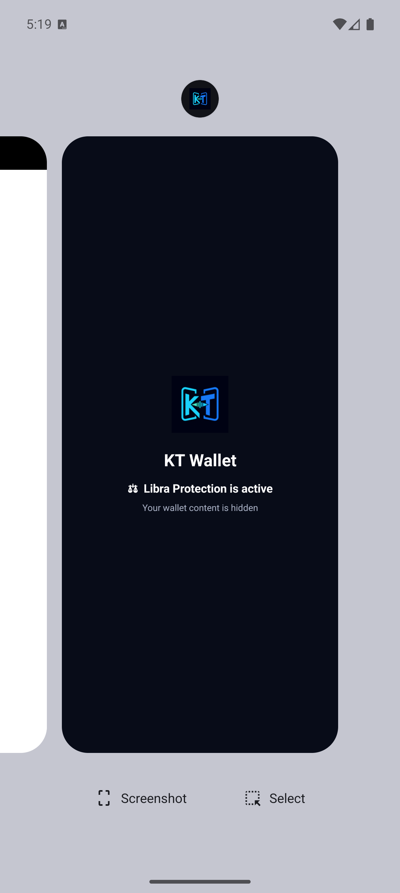
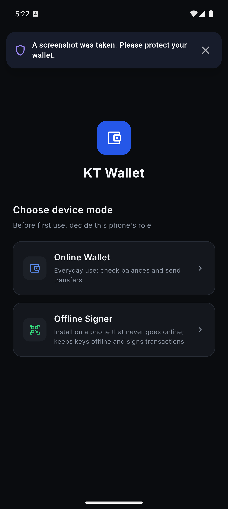
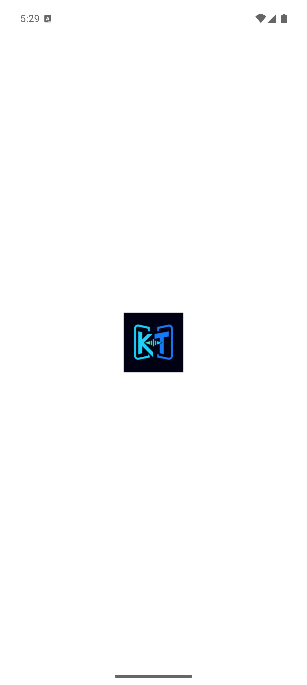
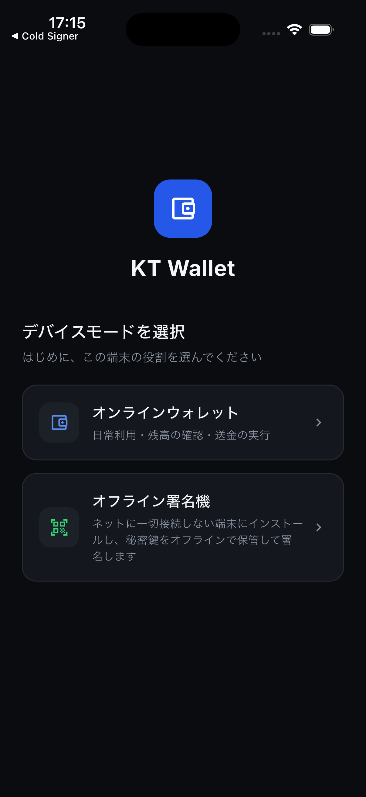
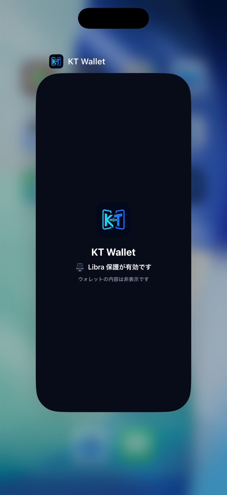
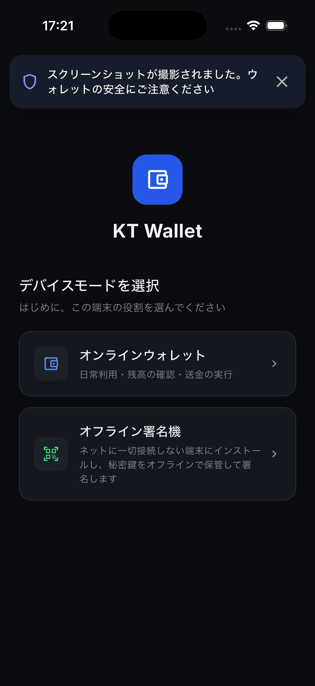

KT Wallet 后台隐私保护与截屏提醒
测试日期：2026-07-26 · Android API 35 Emulator · iPhone 17 Pro / iOS 26.2 Simulator
普通钱包、内嵌离线签名器和独立 Cold Signer 已统一接入屏幕安全层。原生端不读取、不保存截图内容；Android API 34+ 使用官方回调，旧版本不申请 MediaStore 扫描权限。
自动化与构建结果
| 项目 | 结果 | 说明 |
|---|---|---|
| KT Wallet Widget / Unit | 330 passed | 包含转账、App Lock、Face ID/PIN、余额与导航回归 |
| Cold Signer | 104 passed | 包含 PIN、生物识别、签名、重放保护与安全检查 |
| ScreenSecurity | 5 passed | 自动消失、关闭、连续重计时、后台排队、中英日文案 |
| Android builds | 2 passed | KT Wallet 与 Cold Signer debug APK |
| iOS builds | 2 passed | KT Wallet 与 Cold Signer Simulator App |
Android 证据




FLAG_SECURE 保持启用，截图不包含签名器内容。iOS 证据



userDidTakeScreenshotNotification 事件显示日文安全横幅。实现说明
- Android：
onWindowFocusChanged(false)、onUserLeaveHint、onPause三层提前覆盖，onResume恢复。 - iOS：监听 will-resign-active / did-become-active，并预先挂载隐藏的原生 UIView，避免恢复闪帧。
- 截屏横幅持续 6 秒，可关闭；连续事件重置计时；后台事件恢复后展示。
- Android 13 及以下不宣称可靠截屏检测；Cold Signer/内嵌签名器仍优先由
FLAG_SECURE阻止截图。